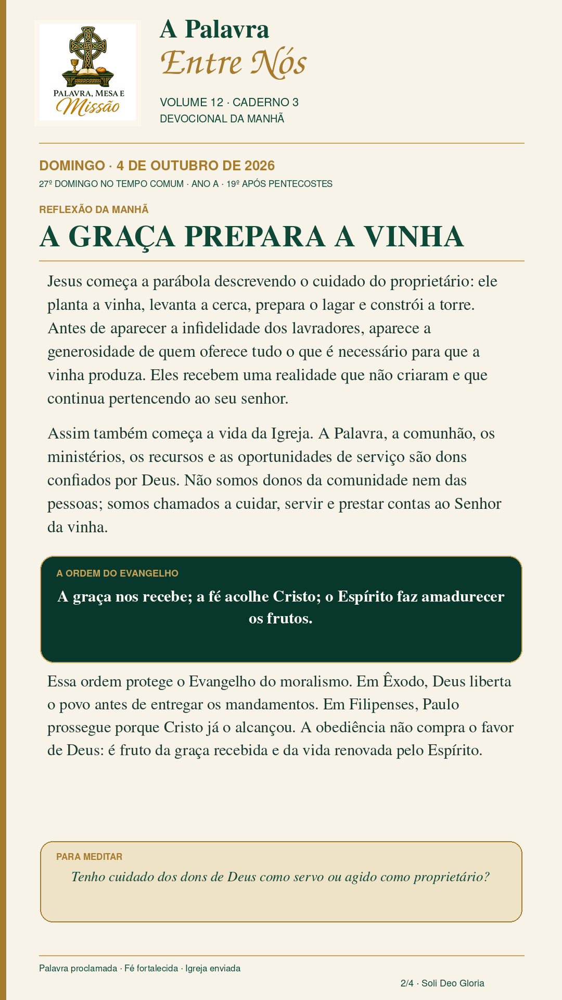
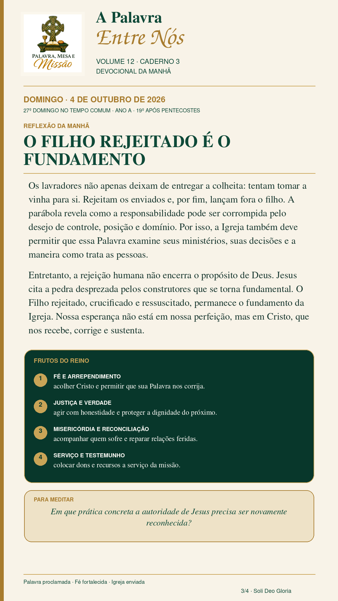
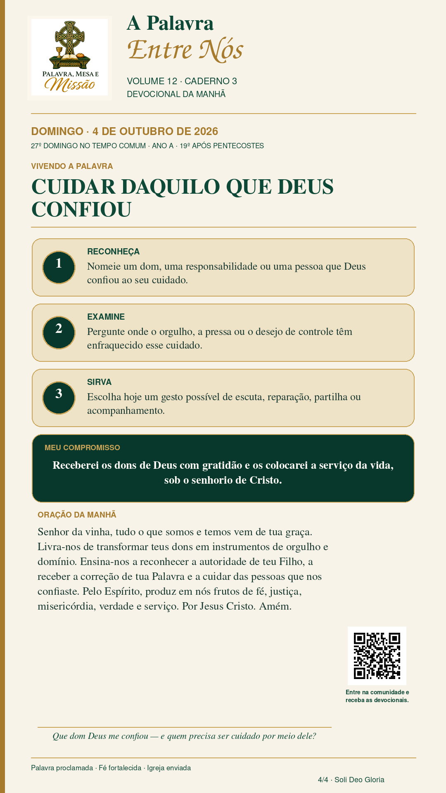
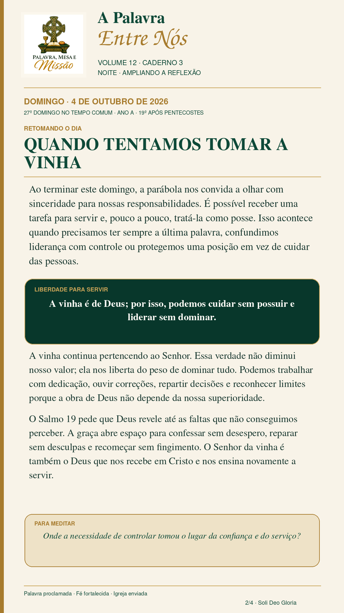
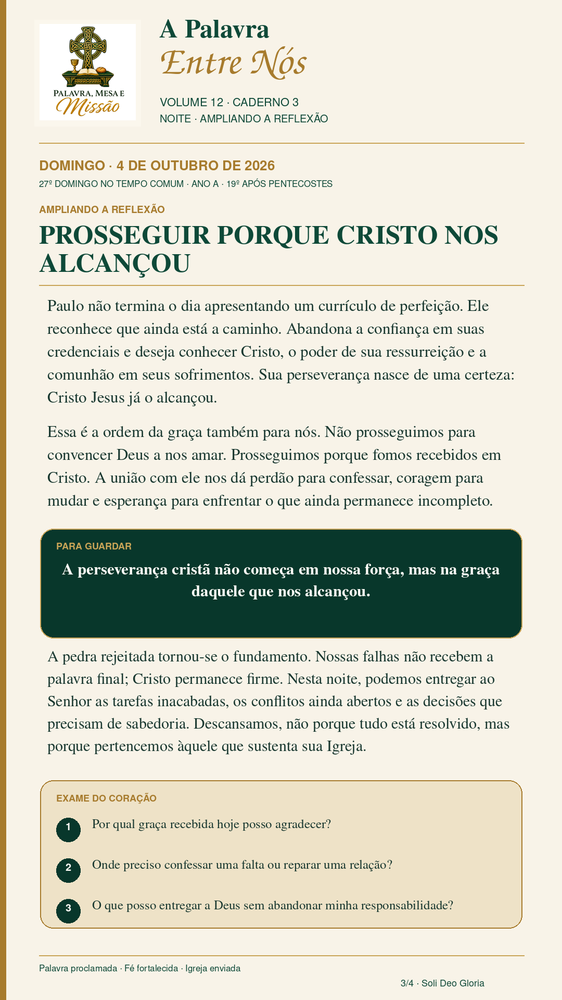
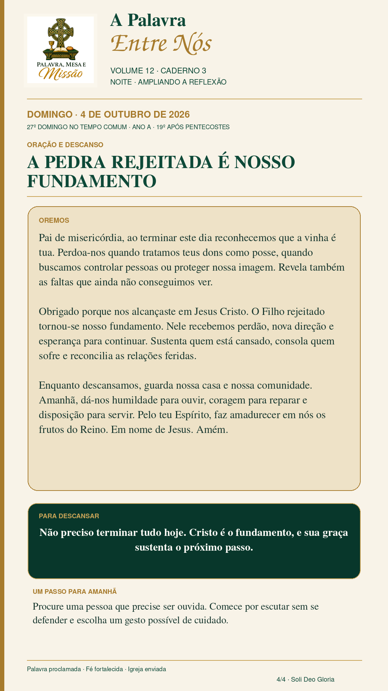

A vinha pertence ao Senhor
Cristo, fundamento de um povo que produz os frutos do Reino. Texto principal: Mateus 21.33–46. Leituras em diálogo: Êxodo 20.1–4,7–9,12–20; Salmo 19; Filipenses 3.4b–14.
Domingo · 4 de outubro de 2026
Devocionais da manhã e da noite · Volume 12 · Caderno 3
Cristo, fundamento de um povo que produz os frutos do Reino.
Texto principal: Mateus 21.33–46. Em diálogo com: Êxodo 20.1–4,7–9,12–20; Salmo 19; Filipenses 3.4b–14.




Cristo, fundamento de um povo que produz os frutos do Reino. Texto principal: Mateus 21.33–46. Leituras em diálogo: Êxodo 20.1–4,7–9,12–20; Salmo 19; Filipenses 3.4b–14.
Jesus começa descrevendo o cuidado do proprietário. Os trabalhadores recebem uma vinha que não criaram e que continua pertencendo ao seu senhor. Assim também a Igreja recebe Palavra, comunhão, ministérios, recursos e oportunidades de serviço. Em Êxodo, Deus liberta antes de entregar os mandamentos; em Filipenses, Paulo prossegue porque Cristo já o alcançou. A obediência é fruto da graça, não preço para comprá-la.
Os lavradores tentam tomar a vinha e rejeitam o filho. A Igreja também deve examinar suas formas de autoridade. Contudo, a rejeição humana não encerra o propósito de Deus: a pedra desprezada tornou-se fundamental. Em Cristo, a comunidade produz frutos de fé e arrependimento, justiça e verdade, misericórdia e reconciliação, serviço e testemunho.
Reconheça um dom ou uma responsabilidade; examine onde o desejo de controle enfraqueceu o cuidado; escolha um gesto possível de escuta, reparação, partilha ou acompanhamento. Compromisso: receberei os dons de Deus com gratidão e os colocarei a serviço da vida, sob o senhorio de Cristo.
Descansar na graça, abandonar o controle e renovar o cuidado.
Leituras: Filipenses 3.4b–14 e Salmo 19, em diálogo com Mateus 21.33–46.



Descansar na graça, abandonar o controle e renovar o cuidado. Leituras: Filipenses 3.4b–14 e Salmo 19, em diálogo com Mateus 21.33–46.
É possível receber uma tarefa para servir e tratá-la como posse. A vinha continua pertencendo ao Senhor. Essa verdade nos liberta para ouvir correções, repartir decisões e reconhecer limites. A graça abre espaço para confessar sem desespero, reparar sem desculpas e recomeçar sem fingimento.
Paulo reconhece que ainda está a caminho. Ele prossegue porque Cristo já o alcançou. Não buscamos convencer Deus a nos amar; avançamos porque fomos recebidos em Cristo. A pedra rejeitada tornou-se o fundamento, e por isso podemos entregar ao Senhor o que ainda está incompleto.
Pai de misericórdia, perdoa-nos quando tratamos teus dons como posse. Obrigado porque nos alcançaste em Jesus Cristo. Guarda nossa casa e nossa comunidade. Dá-nos humildade para ouvir, coragem para reparar e disposição para servir. Pelo teu Espírito, faz amadurecer em nós os frutos do Reino. Amém.
Base editorial: Palavra, Mesa e Missão — Volume 12, Caderno 1, domingo de referência 4 de outubro de 2026. Conteúdo devocional desenvolvido para o Caderno 3, preservando a centralidade de Cristo, a primazia da graça e os frutos do Reino como resposta da fé.